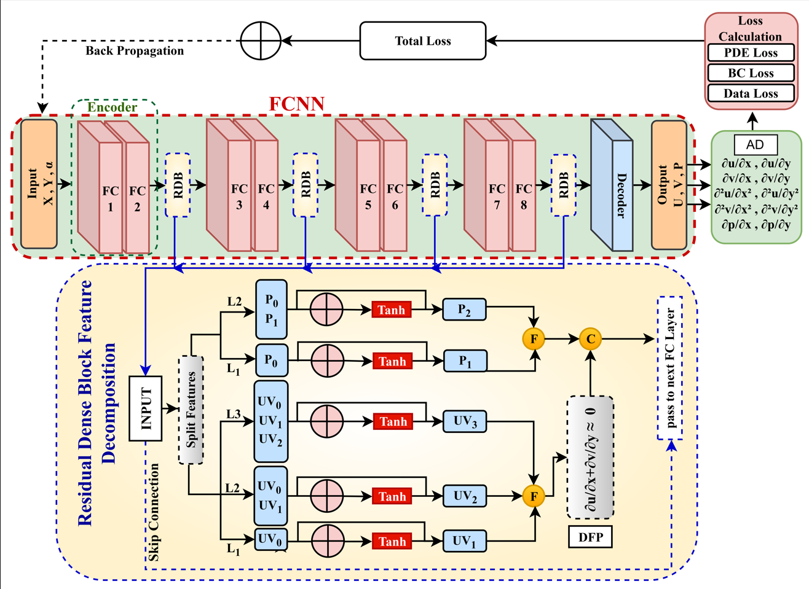
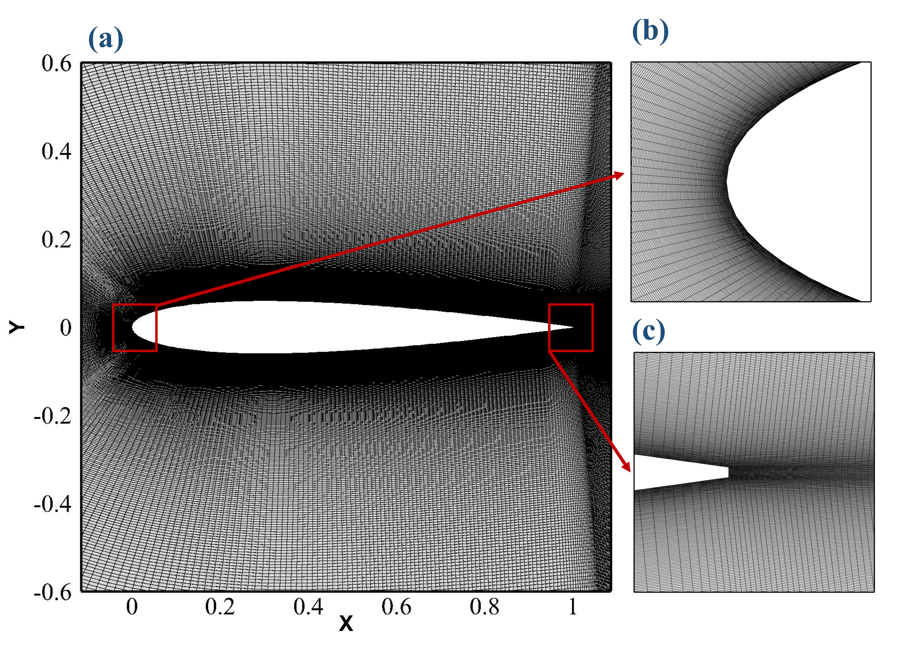
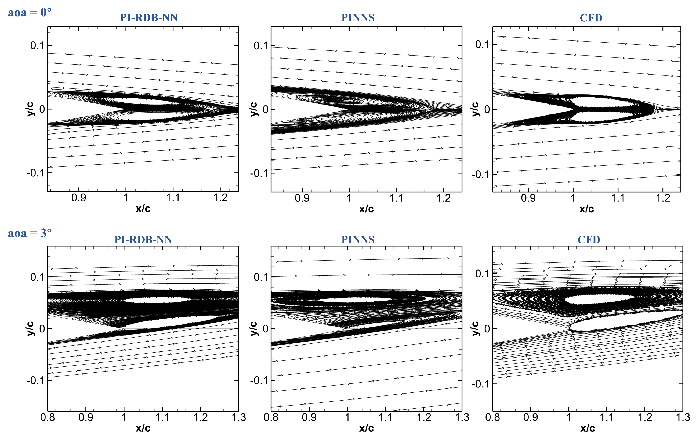
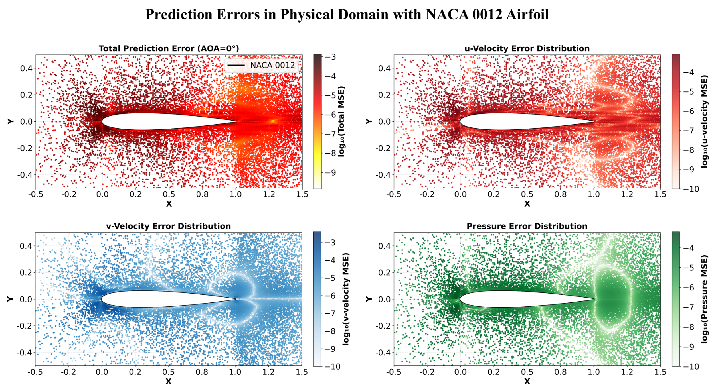
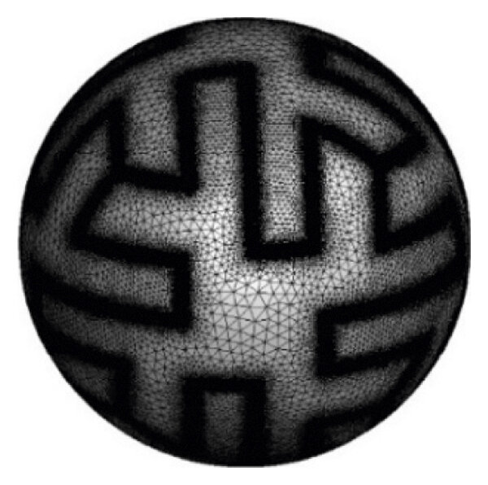
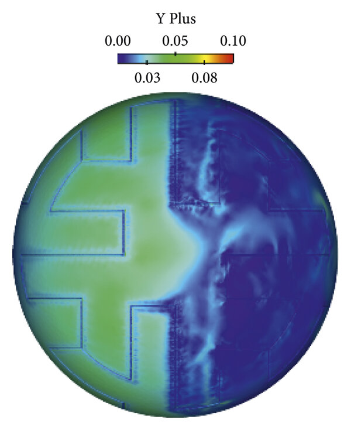
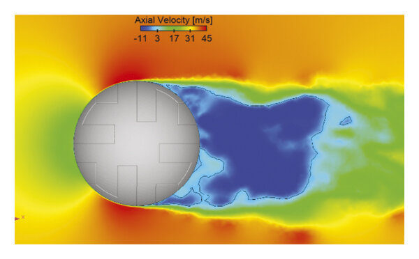
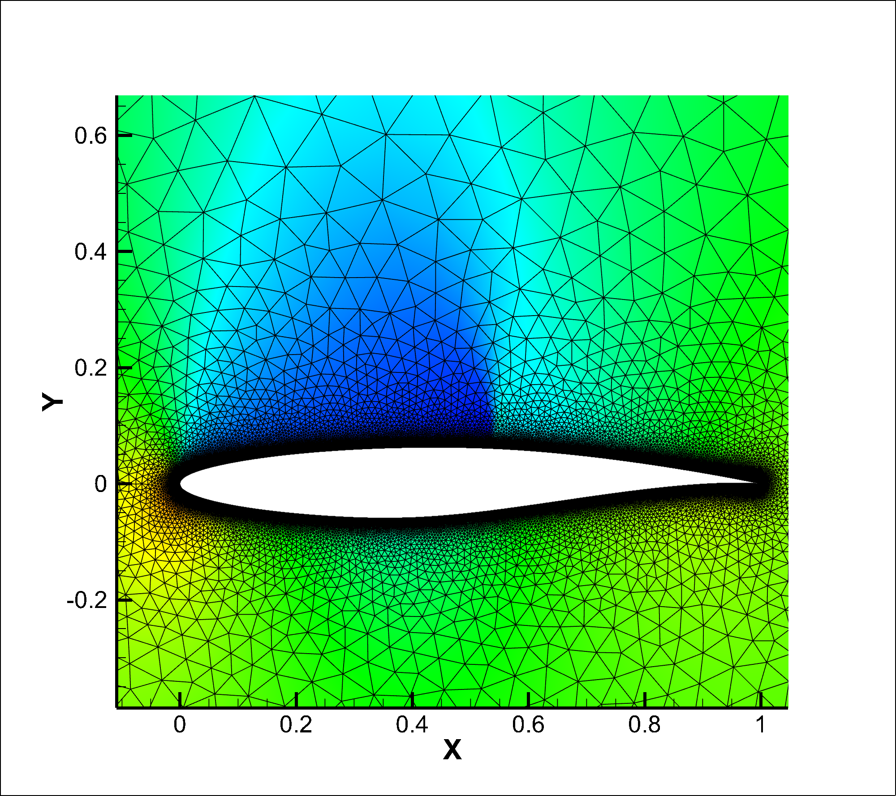
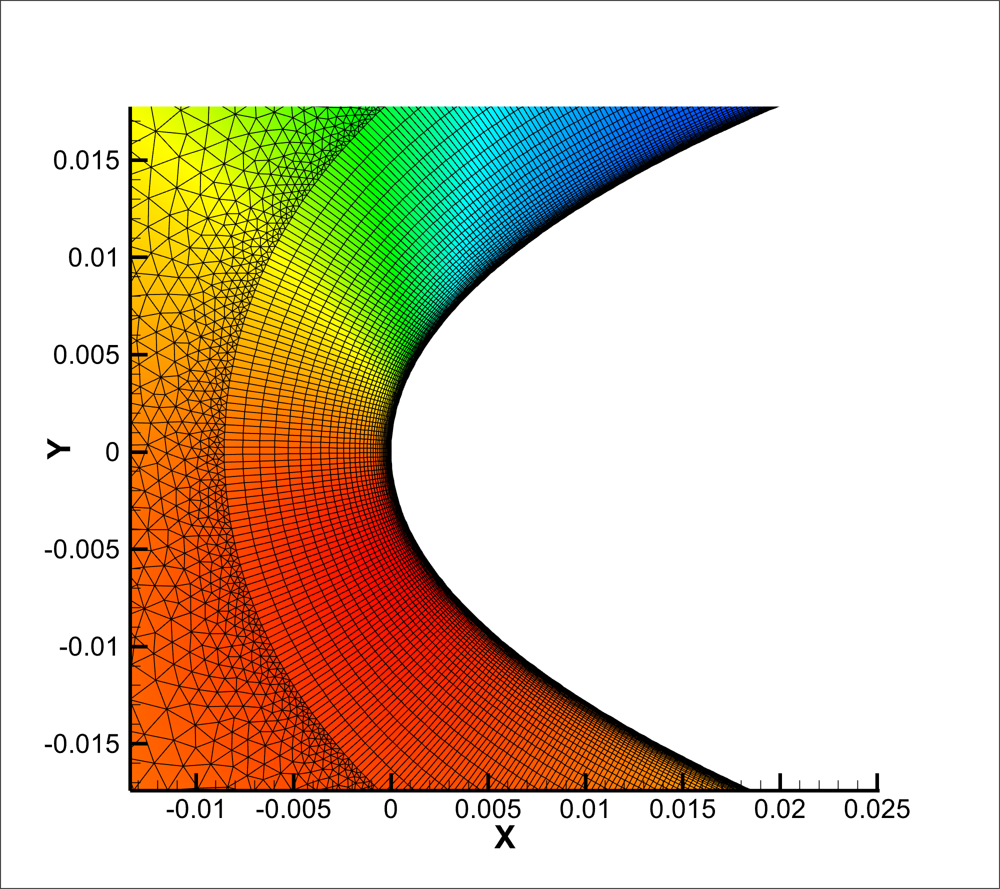

Sarmad
Iftikhar.
CFD engineer and PhD researcher at Northwestern Polytechnical University, Xi'an. Developing a Hybrid Data-Driven Physics-Informed Neural Network (HDD-PINNs) for higher-Reynolds-number turbulent flow modelling. Bridging classical numerical methods — FVM, LES, immersed boundary — with the approximation power of deep neural networks.
Background
I am an experienced Computational Fluid Dynamics engineer with extensive expertise in industry-standard tools including ANSYS Fluent, STAR-CCM+, OpenFOAM, and UCNS3D. I implement physics-informed neural networks and numerical solvers in Python for fluid flow problems — from model training through to result post-processing.
During my PhD at Northwestern Polytechnical University, I contributed to the development of an advanced numerical method: an Improved Immersed Boundary-based Finite Volume Method using Walsh Basis Functions (FVM-WBF-IB) — implemented entirely in Fortran90 for non-body-fitted Cartesian grids.
My current research focuses on developing HDD-PINNs for higher-Reynolds-number turbulent flow modelling, solving Euler and Navier-Stokes equations for both steady and transient flows.
Education
Coursework: Advanced Numerical Analysis, Compressible & Incompressible Fluids, Applied Mathematics for CSE, Boundary Layer Theory, Applied Linear Algebra, CFD.
Research Experience
Research Projects
PhD dissertation research developing a Hybrid Data-Driven Physics-Informed Neural Network framework. This work fuses data-driven learning with hard physics constraints encoded through residual minimization to model turbulent flows at higher Reynolds numbers — a regime where vanilla PINNs struggle. The architecture incorporates residual dense block neural networks with physics-informed feature decomposition, solving both Euler and Navier-Stokes equations for steady and transient configurations. Key innovation: combining supervised learning from high-fidelity CFD data with unsupervised PDE residuals to achieve superior generalization and accuracy in complex flow regimes.




MS thesis research investigating the effect of panel shape and surface patterns on soccer ball aerodynamics using Large Eddy Simulation (LES) in ANSYS Fluent. The study systematically characterizes drag, lift coefficients, and wake instabilities as a function of panel geometry and Gruber grooves (surface texture). High-fidelity unstructured tetrahedral meshes with inflation layers were carefully designed to accurately resolve the viscous boundary layer and capture critical flow separation phenomena. Results published in a peer-reviewed journal (DOI: 10.1155/2022/3455235).



📄 Publication: Large Eddy Simulation of the Flow Past a Soccer Ball · 2022
Advanced CFD validation study employing OpenFOAM to compute aerodynamic coefficients for the RAE2822 benchmark airfoil. This work focuses on accurate prediction of pressure distribution and aerodynamic forces under transonic flow conditions. High-quality structured and unstructured hybrid meshes were generated with particular attention to leading-edge resolution and boundary layer refinement. Pressure contours and coefficient distributions are compared against experimental data and literature benchmarks, demonstrating CFD accuracy for airfoil design applications.



Co-developed a novel high-order numerical method for non-body-fitted Cartesian grids integrating the Immersed Boundary Method, Finite Volume Method (FVM), and Walsh Basis Functions. Implemented entirely in Fortran90 with emphasis on computational efficiency and accuracy. The FVM-WBF-IB method enables complex geometry handling without expensive mesh generation, making it ideal for optimization and parametric studies. Provides high-order spatial accuracy while maintaining the robustness of classical FVM approaches. Manuscript submitted for peer review and represents a significant contribution to computational aerodynamics and fluid-structure interaction analysis.